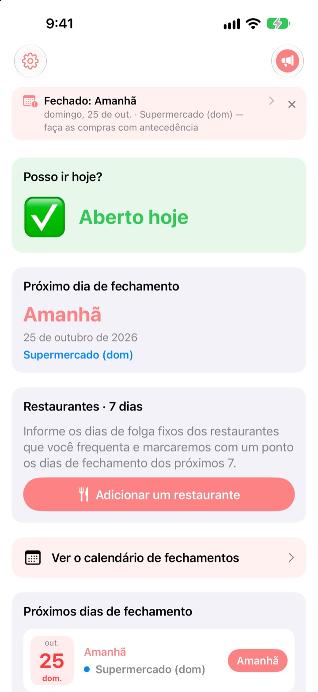
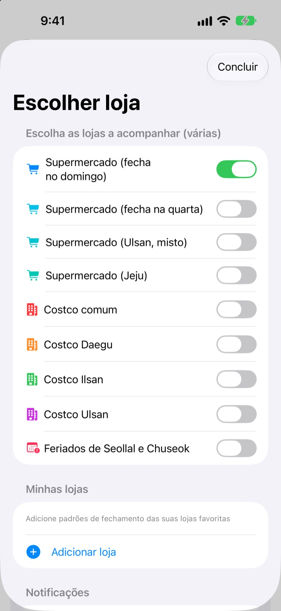
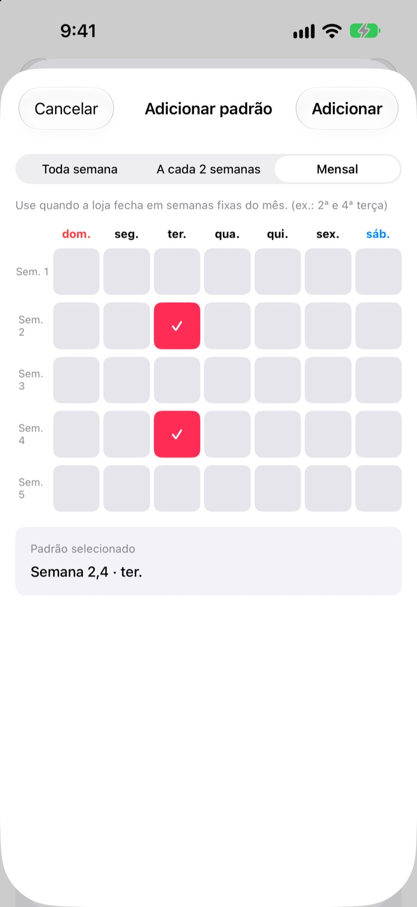
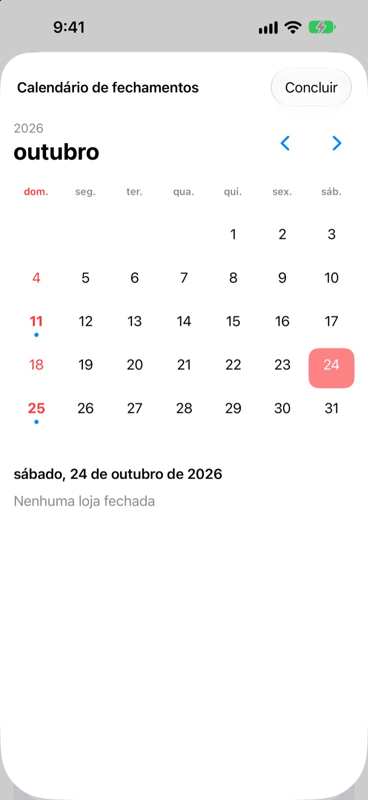
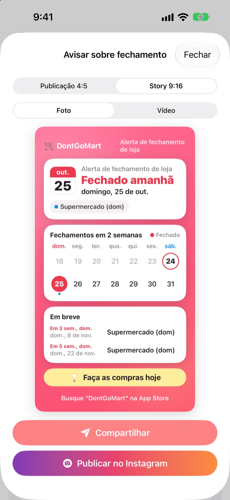

Antes de ir às compras,
veja se está aberto
Ao abrir o app, a primeira coisa que você vê é se suas lojas abrem hoje. Antes de cada fechamento chega um lembrete, para você nunca mais dar com a porta fechada.
Todos os recursos são grátis. Sem conta e sem anúncios.

Teste com a sua loja
Escolha uma loja e veja na hora se ela abre hoje e quando fecha da próxima vez. O cálculo segue as mesmas regras do app.
Já chegou com a lista de compras e deu com a loja fechada?
Na Coreia, os hipermercados precisam fechar dois dias por mês, mas quais depende do lugar. Na maioria é o segundo e o quarto domingo, em outros a quarta-feira, e Ulsan e Jeju têm regras próprias. No Costco varia de unidade para unidade. O DontGoMart calcula os fechamentos pelas regras das suas lojas e diz logo de cara se dá para ir hoje.
Certo para cada região
Escolha lojas que fecham no domingo ou na quarta, ou regiões com calendário próprio, como Ulsan e Jeju. As unidades comuns do Costco e as de Daegu, Ilsan e Ulsan têm configuração separada.
Os fechamentos no dia de Seollal e Chuseok também aparecem, e dá para acompanhar várias lojas ao mesmo tempo.

A loja do bairro e os restaurantes de sempre
Se uma loja não está na lista, adicione você mesmo: toda semana, a cada duas semanas ou em quais semanas do mês e em que dia ela fecha.
Para restaurantes, cole um link compartilhado do Naver Map ou escolha uma captura da página do lugar, e os dias de folga são preenchidos sozinhos. O texto das fotos é lido só no seu aparelho.

Lembretes e widgets para não esquecer
Receba um aviso 1, 2, 3 ou 7 dias antes, no horário que preferir, e outro na véspera lembrando que hoje é um bom dia para as compras.
Os widgets da Tela de Início e da Tela Bloqueada mostram o próximo fechamento, se abre neste domingo e os próximos sete dias dos seus restaurantes. O calendário mostra o mês inteiro.

Compartilhe em um único card
Transforme o aviso em um card com calendário de duas semanas e uma dica de compras e mande no grupo da família. Tem tamanhos para post e story do Instagram, e vídeo curto.

Comece em três passos
- 1
Escolha suas lojas
Ative as lojas e regiões onde você compra. Quantas quiser.
- 2
Ative os lembretes
Defina com quantos dias de antecedência e em que horário.
- 3
Adicione um widget
Confira na Tela de Início ou Bloqueada sem abrir o app.
Regras de fechamento por loja
- Supermercado (fecha no domingo)
- 2º e 4º domingo · maioria das regiões
- Supermercado (fecha na quarta)
- 2ª e 4ª quarta · parte de Gyeonggi, Cheongju
- Supermercado (Ulsan)
- 2ª quarta, 4º domingo
- Supermercado (Jeju)
- 2ª sexta, 4º sábado
- Costco comum
- 2º e 4º domingo
- Costco Daegu
- 2ª e 4ª segunda · Daegu, Daegu Innovation
- Costco Ilsan
- 2ª e 4ª quarta
- Costco Ulsan
- 2ª quarta, 4º domingo
- Seollal, Chuseok
- fechado no próprio dia
Os fechamentos obrigatórios são definidos pelos governos locais e podem mudar. Se algo não bater, escreva para o endereço abaixo.
Perguntas frequentes
Os dias de fechamento não batem com a realidade.
Os fechamentos obrigatórios seguem leis municipais e mudam de região para região. Confira nos Ajustes se escolheu o tipo de loja certo (fecha no domingo, na quarta, Ulsan, Jeju etc.). Se ainda não bater, mande o nome da loja e a região que a gente verifica.
Minha loja não está na lista.
Adicione como loja sua. Escolha toda semana, a cada duas semanas ou em quais semanas do mês e em que dia ela fecha, por exemplo no segundo e no quarto domingo.
A folga de um restaurante não foi preenchida direito.
Ao importar por link do Naver Map, a página do restaurante precisa informar os dias de folga. Com captura de tela, deixe o aviso de fechamento visível na tela. Dá para corrigir tudo antes de salvar.
Não recebo os lembretes.
Veja se as notificações estão permitidas em Ajustes > Notificações > DontGoMart e se os lembretes estão ativados dentro do app.
O widget não atualiza.
Abrir o app uma vez atualiza os widgets. Se continuar igual, remova o widget e adicione de novo.
O que são as gorjetas?
Todos os recursos do DontGoMart são grátis. As gorjetas de café, bolo e refeição servem para apoiar o desenvolvedor. Depois você recebe um agradecimento e um selo com o número de gorjetas enviadas.
Com quem falo sobre pagamentos ou reembolsos?
A Apple cuida das compras dentro do app, então o reembolso é pedido em reportaproblem.apple.com. Para o resto, escreva para a gente.
Como meus dados são tratados?
Não há conta, anúncios nem ferramentas de rastreamento, e o texto das capturas é lido só no seu aparelho. Detalhes na Política de Privacidade abaixo.
Dúvidas ou ideias? Escreva para hyunho.lee.1993@gmail.com. Costumamos responder em um ou dois dias.